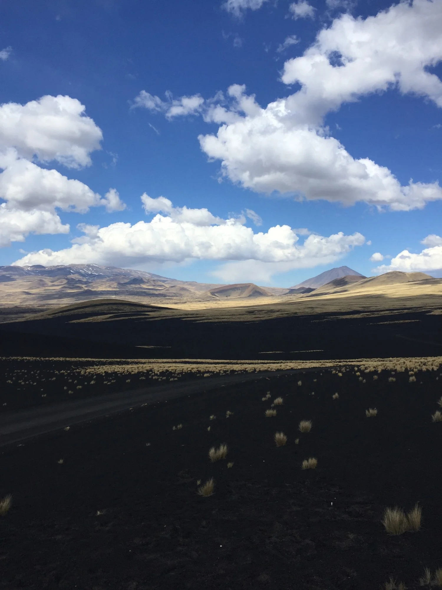
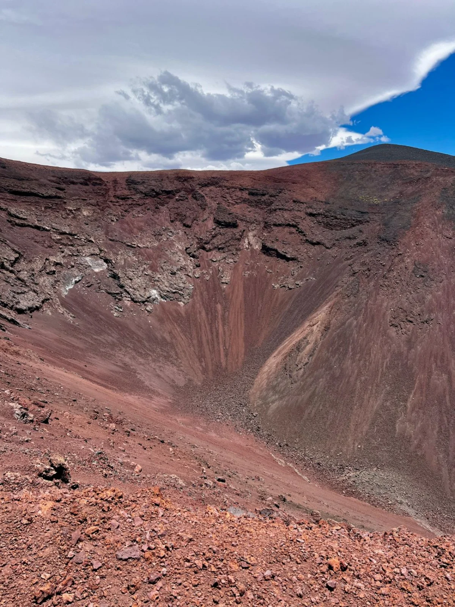
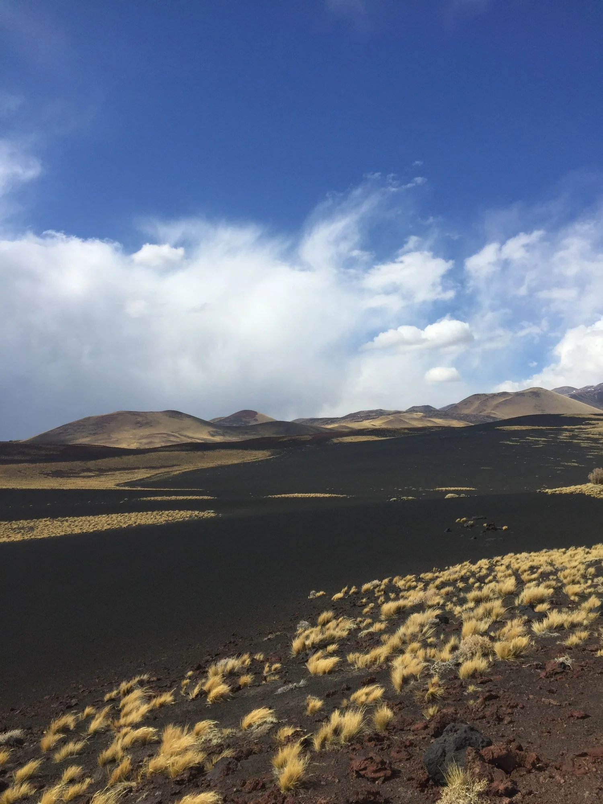
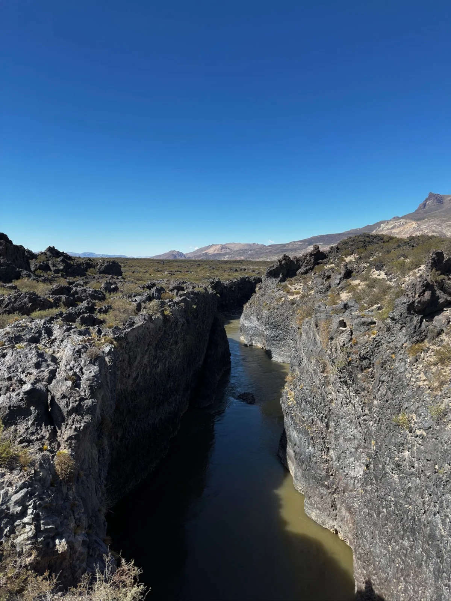
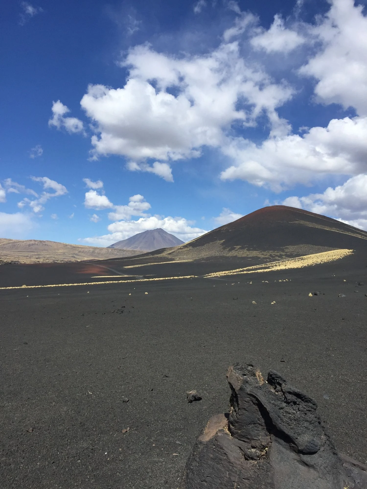
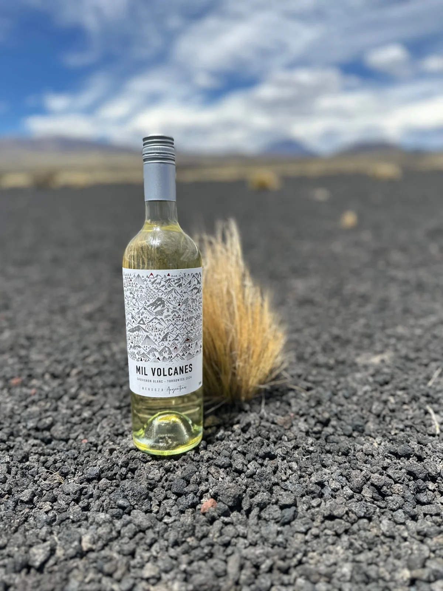
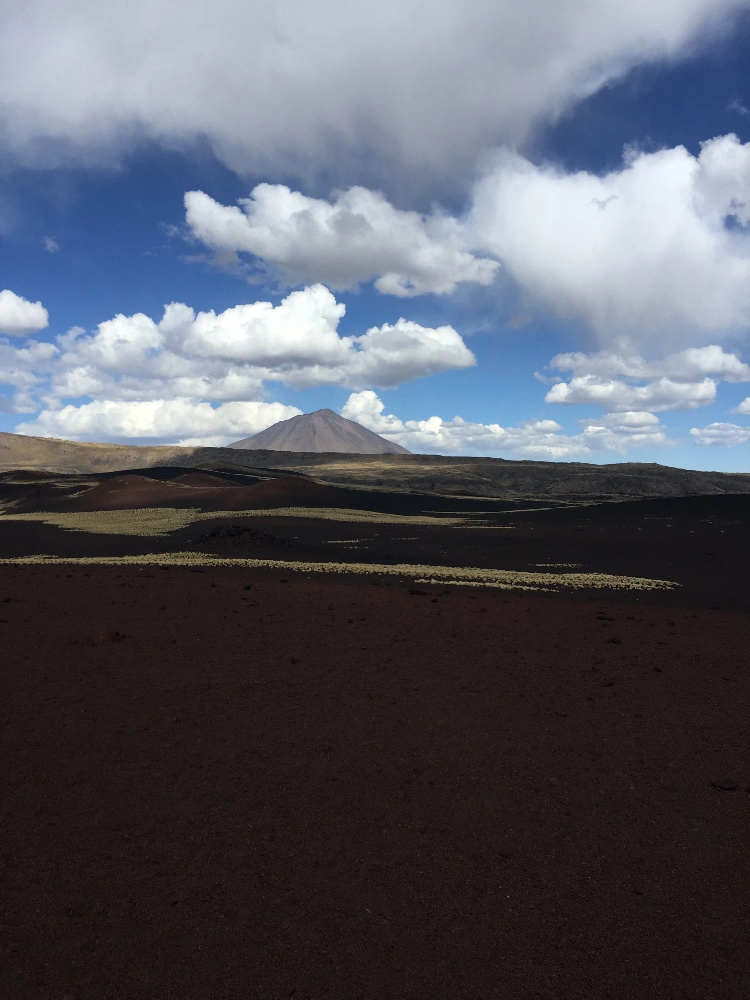

Volcán Herradura
Un antiguo cráter abierto en forma de herradura, formado por la actividad volcánica.
Para poder navegar este sitio, debes tener la edad legal para consumir alcohol en tu país de residencia.
Al presionar el botón "Sí", certificás que cumplís con la edad legal.
Reserva Natural
El desierto de ochocientos volcanes que le dio nombre y espíritu a cada una de nuestras etiquetas.
Malargüe, sur de Mendoza
Casi mil conos volcánicos moldearon este paisaje único.
Otros hitos de la reserva

Un antiguo cráter abierto en forma de herradura, formado por la actividad volcánica.

Sus tonalidades rojizas se deben a la oxidación del hierro presente en materiales piroclásticos y proyecciones volcánicas.

Una extensa planicie cubierta de piedras volcánicas oscuras, resultado de la antigua actividad eruptiva.

El paso del agua fue esculpiendo la roca volcánica y dando forma a este profundo cauce natural.

Payún Liso
Su nombre describe su forma: un cono casi perfecto, de laderas lisas y sin quebradas, que contrasta con la aspereza volcánica del resto de la Payunia. «Payún» proviene de vocablos originarios asociados a «barba» o «pelo» (en referencia a pastizales o plumerillos que crecen en sus faldas), y «Liso» por la uniformidad y regularidad de sus laderas.
Fauna & estepa
La mayor concentración de guanacos salvajes de Mendoza recorre esta estepa, donde hasta el pasto más simple, el coirón, aprende a crecer en piedra volcánica.

